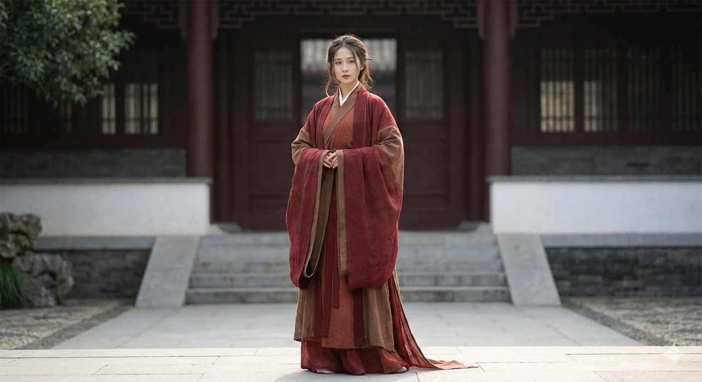
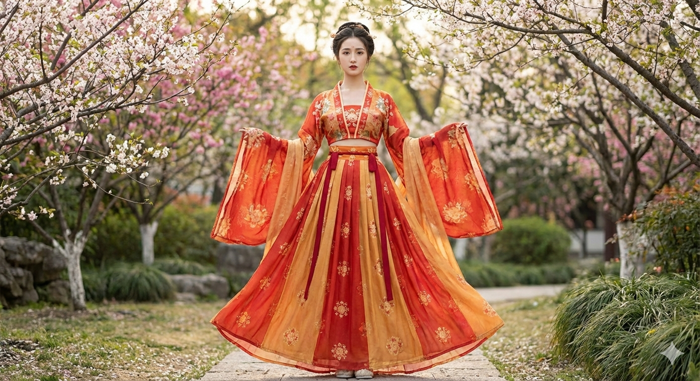
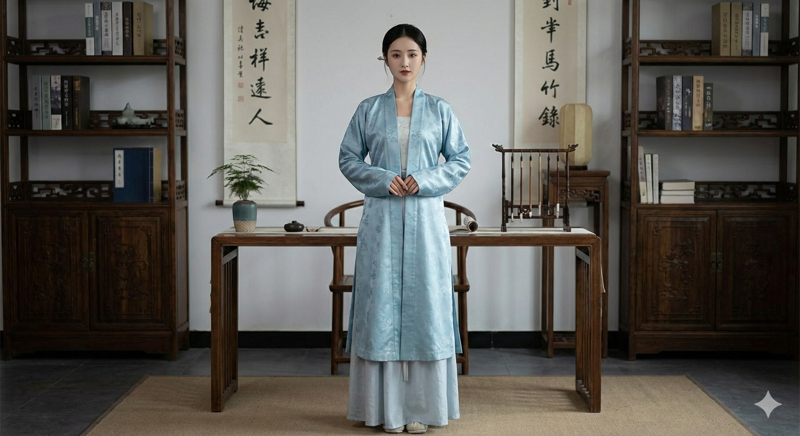
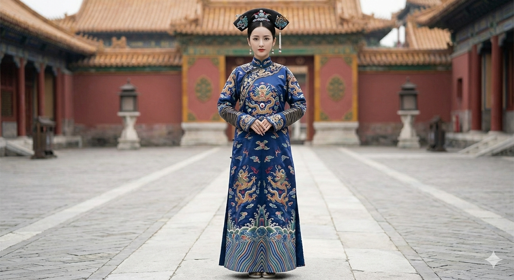
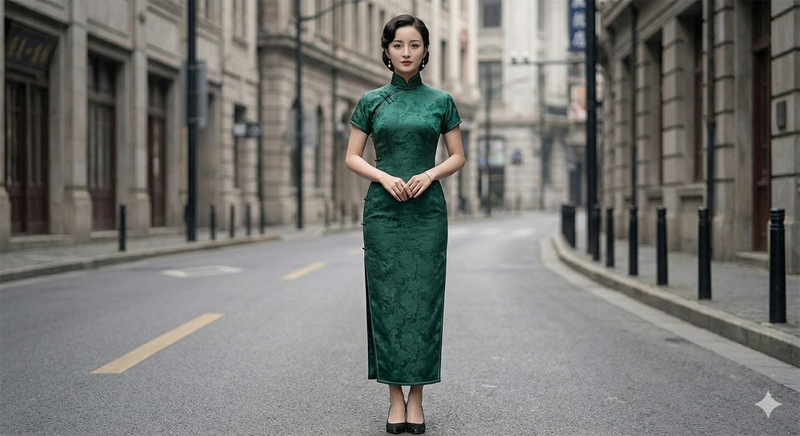

Chinese clothing, or Hanfu, has a rich history that spans thousands of years. Its evolution is a fascinating journey that reflects the cultural, political, and social changes of each dynasty.
1. The Han Dynasty (206 BCE – 220 CE)
The Han Dynasty set the standard for Hanfu. The most iconic garment was the shenyi, a one-piece robe that wrapped around the body.

2. The Tang Dynasty (618–907 CE)
A period of great prosperity and cultural exchange. The ruqun (short blouse and long skirt) became the dominant style for women, known for high waists and billowing sleeves.

3. The Song Dynasty (960–1279 CE)
The Song Dynasty saw a shift back towards a more subdued aesthetic. The beizi, a straight-cut, open-front jacket, became a defining garment.

4. The Qing Dynasty (1644–1912 CE)
The Manchu people introduced the qipao (or cheongsam). It featured a straight cut, high collar, and wide sleeves, eventually replacing the Han ruqun.

5. The Republic of China (1912–1949 CE)
The qipao evolved into a form-fitting, modern dress with high collars and side slits, becoming a global symbol of Chinese elegance.

Summary
From the flowing shenyi of the Han Dynasty to the elegant qipao of the Republic, Chinese dress reflects a beautiful tapestry of fashion history and cultural innovation.